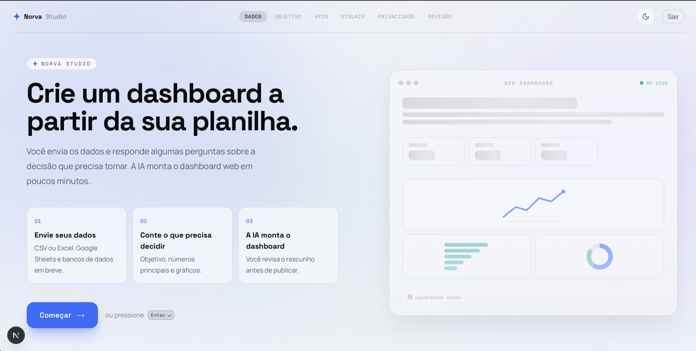
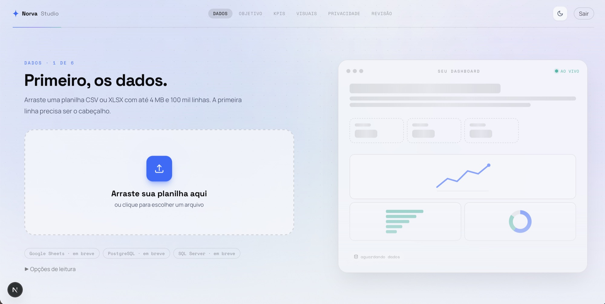
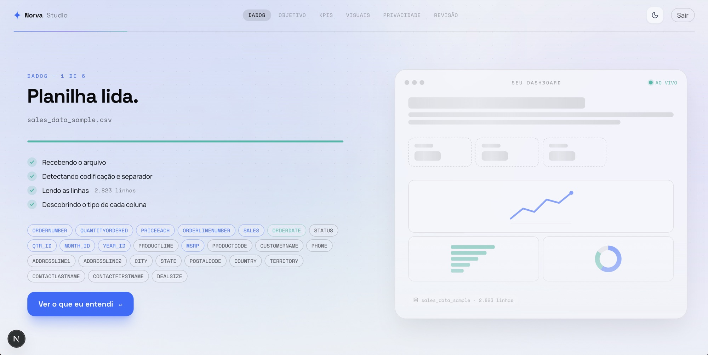
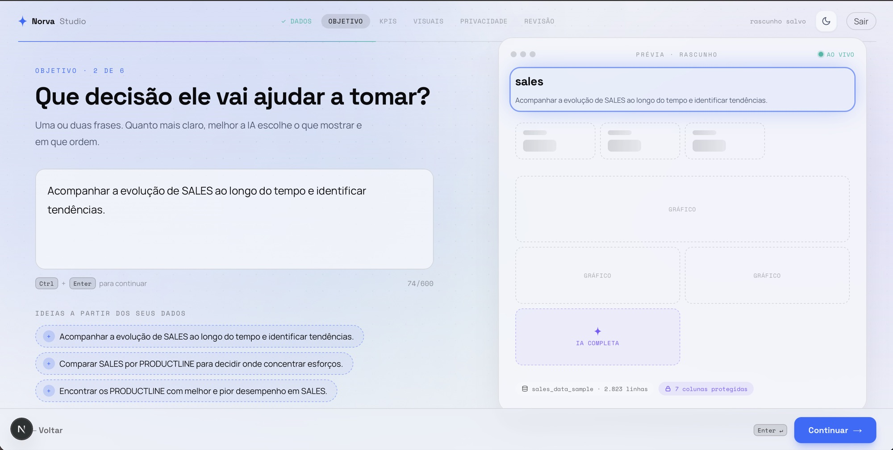
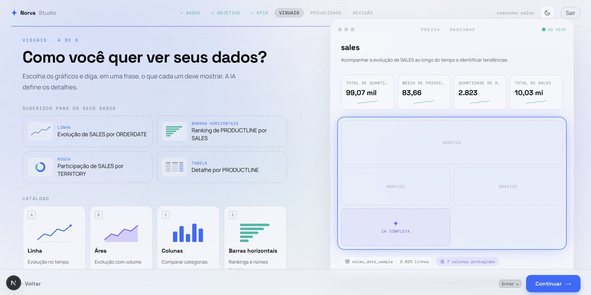
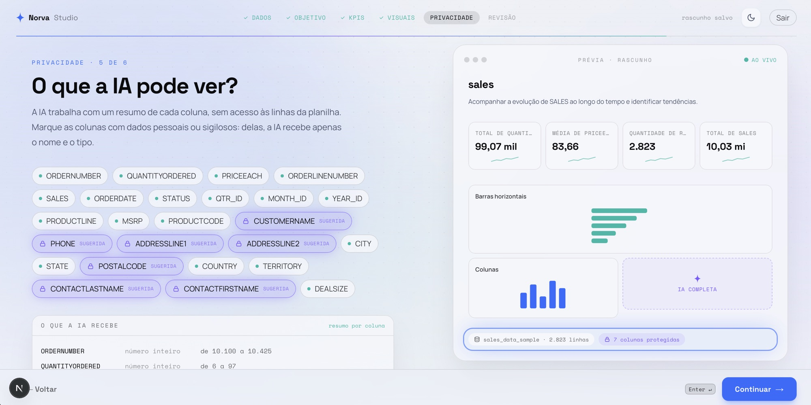

01
Cada nova pergunta vira projeto
Uma mudança simples costuma depender de briefing, backlog e várias rodadas entre negócio, dados e design. Quando o dashboard chega, a decisão já mudou.
O Intelligence Portal conecta planilhas, bancos de dados, APIs e ambientes de BI para transformar perguntas e processos de negócio em dashboards web sob medida. Agentes especializados constroem a experiência, acompanham as métricas e explicam o que merece atenção — continuamente.

Entre a pergunta do negócio e uma resposta útil existe uma fila de especificação, desenvolvimento e manutenção. O Intelligence Portal encurta esse ciclo com agentes.
Uma mudança simples costuma depender de briefing, backlog e várias rodadas entre negócio, dados e design. Quando o dashboard chega, a decisão já mudou.
Mesmo quando a visualização está correta, alguém ainda precisa interpretar o que mudou, investigar a causa e decidir o próximo passo.
O portal se conecta às suas fontes e coordena agentes especializados para transformar dados em uma experiência pronta para uso.
Integramos bancos, APIs, planilhas e também ferramentas como Power BI ao mesmo contexto governado.
Agentes de dados, análise e interface criam o dashboard web adequado à pergunta e ao perfil de cada público.
Agentes acompanham as métricas, explicam mudanças, detectam anomalias e recomendam o próximo passo.
Segurança em nível de linha, SSO e um catálogo de relatórios controlam quem vê o quê — até o nível da linha.
O Norva Studio conecta planilhas, bancos de dados e APIs a uma decisão de negócio para criar um dashboard web governado. Estas são telas reais do produto — não um mockup conceitual.






Interfaces responsivas e interativas, desenhadas para cada fluxo de decisão — no desktop ou no celular.
Agentes especializados colaboram para modelar dados, criar visualizações, investigar mudanças e redigir respostas.
O portal monitora suas métricas e sinaliza o que foge do padrão — enviado automaticamente às pessoas certas.
Seu logo, suas cores, seu domínio. Para quem faz login, é simplesmente o produto de dados da sua empresa.
Segurança em nível de linha, single sign-on e papéis granulares para que cada um veja exatamente os dados que deve.
Conecte bancos, APIs, planilhas e Power BI sem limitar o produto a uma única ferramenta ou fonte.
Depois de construir a experiência, os agentes continuam trabalhando: monitoram métricas, investigam desvios e entregam tendências, anomalias e próximos passos em linguagem clara.
A receita está 12% acima da meta no trimestre, puxada pelo segmento Enterprise. A região Sul é o único ponto fraco — duas contas para acompanhar.
O gasto com cloud saltou 9% vs. o mês anterior — fora da faixa normal. Nesse ritmo, o runway encurta cerca de 2 meses.
A entrega no prazo tende a 96% no próximo mês se a capacidade atual se mantiver. Um centro de distribuição é o gargalo.
O modelo com agentes reduz o ciclo entre uma nova pergunta e uma resposta em produção — e mantém o produto evoluindo depois da entrega.
Cada ajuste volta para a fila de especificação, desenvolvimento e publicação.
Agentes compartilham o contexto e aceleram criação, análise e evolução contínua.
Cada implantação é desenhada para o contexto, as fontes e as regras de acesso da sua empresa.
Traga uma decisão importante e uma fonte de dados. Mostramos como o Intelligence Portal transforma esse contexto em uma experiência web inteligente.